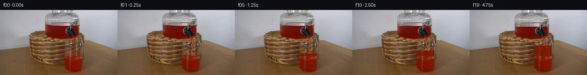

![首帧]()

Round 00
2026-11-06T08:44:40.321839+00:00像素候选变化代码 +179/−0inspection 更新
pixels 2ad188d6eb48e656 · code 3c543d6a543a4c43
查看本轮 generate.py 真实 diff
--- previous/generate.py
+++ current/generate.py
@@ -0,0 +1,179 @@
+"""PixelWorld case_0064 generator.
+
+Locked-off shot of a ribbed glass beverage dispenser on a woven basket
+pouring bright red liquid into a clear tumbler. Only liquid-related
+pixels change: tumbler level rises, the stream stays continuous with
+flicker/splash, and the dispenser level falls slightly. Everything is
+local numpy/PIL pixel math starting from first_frame.png.
+"""
+from pathlib import Path
+import numpy as np
+from PIL import Image
+
+import artifact_io
+
+CASE = Path(__file__).parent
+F0 = np.array(Image.open(CASE / "first_frame.png").convert("RGB")).astype(np.float64)
+H, W, _ = F0.shape
+
+# ---------------------------------------------------------------- geometry
+R, G, B = F0[:, :, 0], F0[:, :, 1], F0[:, :, 2]
+RED_TIGHT = (R > 90) & (G < 70) & (B < 50) & (R - G > 40)
+RED_LOOSE = (R > 80) & (G < 80) & (B < 62) & (R - G > 28)
+DARK = (R < 70) & (G < 70) & (B < 70)
+
+# Tumbler interior (full-width rows, above the rounded base).
+GL_X0, GL_X1 = 140, 178 # liquid interior columns
+SURF0 = 101.0 # initial bulk surface row
+L_END = 78.0 # surface row at frame 19
+RIM_BOTTOM = 66 # never paint at/above the rim
+
+# Stream geometry (inside the glass only; spout region is untouched).
+STR_X = 162 # nominal stream centre column
+STR_TOP = 65
+
+# Dispenser (jar) level.
+JAR_X0, JAR_X1 = 96, 172
+JAR_LEVEL0 = 33.5 # bulk surface row at frame 0
+JAR_DROP = 3.5 # total drop in px over 5 s
+
+# ---------------------------------------------------------------- textures
+# Per-column list of native liquid rows, so new rows reuse the real red
+# texture/noise of the tumbler liquid itself.
+liquid_rows = {}
+for x in range(GL_X0, GL_X1 + 1):
+ ys = np.flatnonzero(RED_TIGHT[104:137, x]) + 104
+ liquid_rows[x] = ys if len(ys) else np.arange(110, 130)
+
+# Empty ribbed glass texture (frame-0 row 30, ribs run vertically so a
+# same-column clone stays aligned) for the falling jar level.
+EMPTY_GLASS = F0[30, :, :].copy()
+
+# Basket-as-seen-through-glass background model for stream inpainting:
+# per-row robust colour from the clear strip left of the stream.
+BG_BAND = F0[:, 136:146, :]
+BG_MED = np.median(BG_BAND, axis=1)
+BG_MAD = np.median(np.abs(BG_BAND - BG_MED[:, None, :]), axis=1) * 1.4826 + 1.0
+
+STREAM_EDGE = np.array([140.0, 50.0, 16.0])
+STREAM_CORE = np.array([196.0, 86.0, 30.0])
+FOAM = np.array([212.0, 148.0, 118.0])
+
+
+def liquid_sample(x, y):
+ """Native liquid pixel for column x, cycled from deep liquid rows."""
+ ys = liquid_rows[x]
+ sy = ys[(y * 7 + x * 3) % len(ys)]
+ return F0[sy, x]
+
+
+def render(t):
+ """Render frame t (t=0 returned verbatim by caller)."""
+ f = F0.copy()
+ frac = t / 19.0
+ level = SURF0 - (SURF0 - L_END) * frac # rising surface (px row)
+ yfill_top = int(np.floor(level))
+
+ # --- 1) dispenser level falls --------------------------------------
+ drop = JAR_DROP * frac
+ for y in range(31, 41):
+ a = np.clip(JAR_LEVEL0 + drop - y, 0.0, 1.0)
+ if a <= 0:
+ continue
+ xs = np.arange(JAR_X0, JAR_X1 + 1)
+ m = RED_LOOSE[y, JAR_X0:JAR_X1 + 1] & ~DARK[y, JAR_X0:JAR_X1 + 1]
+ if not m.any():
+ continue
+ glass = EMPTY_GLASS[JAR_X0:JAR_X1 + 1][m]
… diff truncated; 92 more lines …